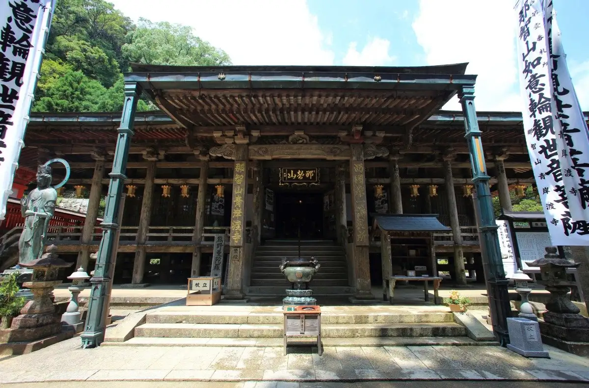
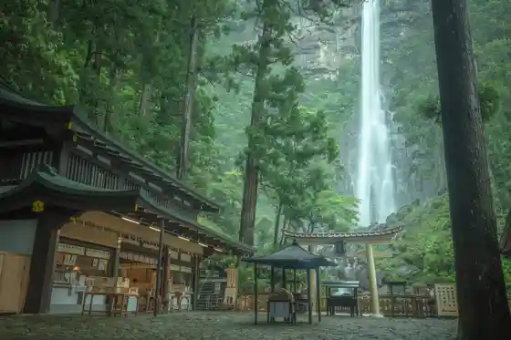
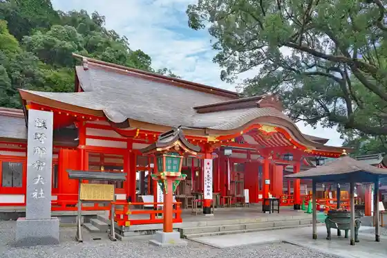
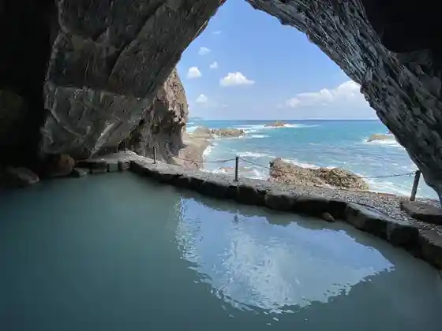
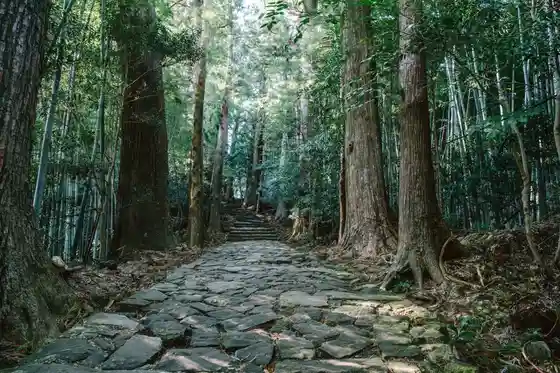

Japan / Wakayama / Nachikatsuura
Nachikatsuura
Nachikatsuura · Wakayama
Nachikatsuura
Highlighted on the Wakayama map.

Sights
Nachi Falls
Nachikatsuura, Wakayama · 0735-55-0321 · Official / source link

Kumano Nachi Taisha
Nachikatsuura, Wakayama · 0735-55-0321 · Official / source link

Bo Ki Hora
Nachikatsuura, Wakayama · 0735-52-1011 · Official / source link

Nachi Yama Seiganto Tera
Nachikatsuura, Wakayama · 0735-55-0001 · Official / source link
Kumano Kodo Daimon Saka
Nachikatsuura, Wakayama · 0735-52-2131 · Official / source link

Roadside Station Nachi
Nachikatsuura, Wakayama · 0735-52-9201 · Official / source link
Benten Shima
Nachikatsuura, Wakayama · 0735-52-0555 · Official / source link
Butsubutsu Kawa
Nachikatsuura, Wakayama · 0735-52-0555 · Official / source link
Fudaraku Yamadera
Nachikatsuura, Wakayama · 0735-52-2523 · Official / source link
Enman Chiko Sono Oto Campground
Nachikatsuura, Wakayama · 0735-56-0771 · Official / source link
Myoho Yama Amida Tera
Nachikatsuura, Wakayama · 0735-55-0053 · Official / source link
Ki no Matsushima
Nachikatsuura, Wakayama · 0735-52-2131 · Official / source link
Tama no Ura Beach
Nachikatsuura, Wakayama · 0735-52-2131 · Official / source link
Kankyo Sho Yoshino Kumano National Park Uku I Bijita Center
Nachikatsuura, Wakayama · 0735-54-2510 · Official / source link
Yukashi Kata
Nachikatsuura, Wakayama · 0735-52-2131 · Official / source link